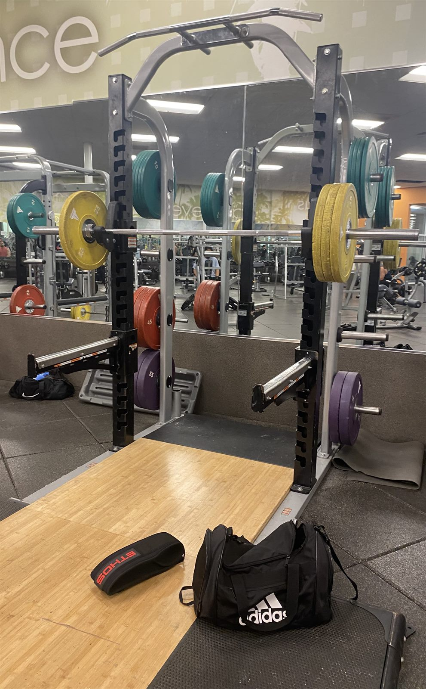

A Solid Gym Bar for Most Lifters: The LA Fitness Olympic Bar

Image credit: Marcos Sanchez, "Olympic Bar Review."
The Olympic barbells at LA Fitness are used in almost every squat and bench rack, which makes them one of the most important tools in the room. They are not flashy, but they support the lifts that make up a large part of a bodybuilding program: bench press, incline variations, squats, deadlifts, shoulder pressing, and rows. One of the best features is the ring placement, which gives lifters a repeatable way to line up their hands before a set.
That repeatability matters because bodybuilding depends on consistent setup. If the bar feels different every time, the lift becomes harder to measure. The rings make it easier to set a bench grip, find a squat hand position, or return to the same pulling width on rows and Romanian deadlifts. For a lifter trying to apply progressive overload, small setup details help separate real strength progress from random variation.
The bar also has a practical grip. Some commercial gym bars feel worn down, while others feel too sharp for higher-volume training. This one usually sits in the middle. Its knurling gives enough traction for hard working sets without making normal bodybuilding volume miserable. It is not a premium power bar, but it is reliable enough for the way most members actually train.
The weakness is that quality can vary from rack to rack. A bar used heavily for years might feel smoother or less balanced than another one in the same gym. Even with that limitation, the LA Fitness Olympic bar succeeds because it is consistent, flexible, and useful across movements. For everyday bodybuilding, that is a strong review.